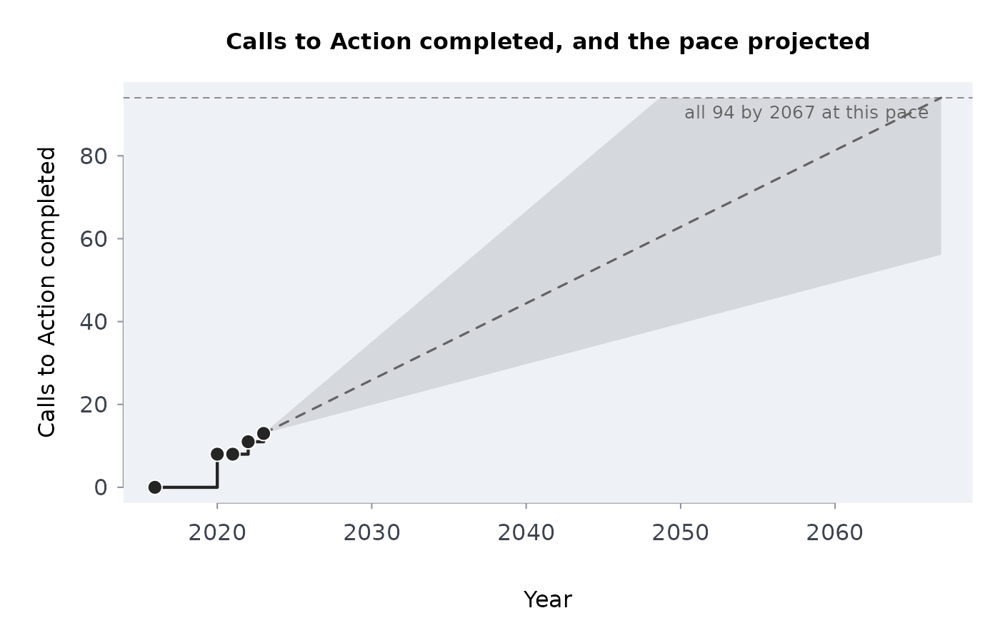

From cumulative counts of completed Calls to Action over time, the completion rate (calls a year), its exact Poisson interval, and the year all 94 would be complete at that rate.
Arguments
- done
Cumulative number completed at each date (default:
trccmpl).- yearend
The year each count was made to (end of year).
- total
Number of Calls to Action (94).
- start
When counting began, as a year with a fraction (2015.96: December 15, 2015).
- conflvl
Confidence level (default 0.95).
Value
A one-row data frame of class rmbl_trc_progress with the columns
completed, remaining, years, rate, ratelo,
rateup, cmplby, cmplbyearly and cmplbylate;
plot() draws the completions and the projection, with the band the rate's
interval gives.
Details
Completions are taken as a Poisson process with a constant rate over the span
from the start (start, the Commission's final report in December 2015) to the
last count: the rate is \(c / T\) with the exact (Garwood) interval for \(c\)
completed calls, and the projection is the year \(94 - c\) more would take at that
rate (at the interval's ends, its range). A constant rate is the simplest model, and
the one behind the Yellowhead Institute's projection ("42 years, or until 2065", 2022);
with the counts to the end of 2022 and December 2015 as the start it gives 2067. The
pace has not been constant, so the projection is a description of the pace so far, not
a forecast. Any count of commitments completed over time can be modelled the same way:
set total and start.
Examples
p <- trcprog()
p
#> completed remaining years rate ratelo rateup cmplby cmplbyearly
#> 1 13 81 7.04 1.846591 0.9832319 3.157727 2066.865 2048.651
#> cmplbylate
#> 1 2105.381
plot(p)
